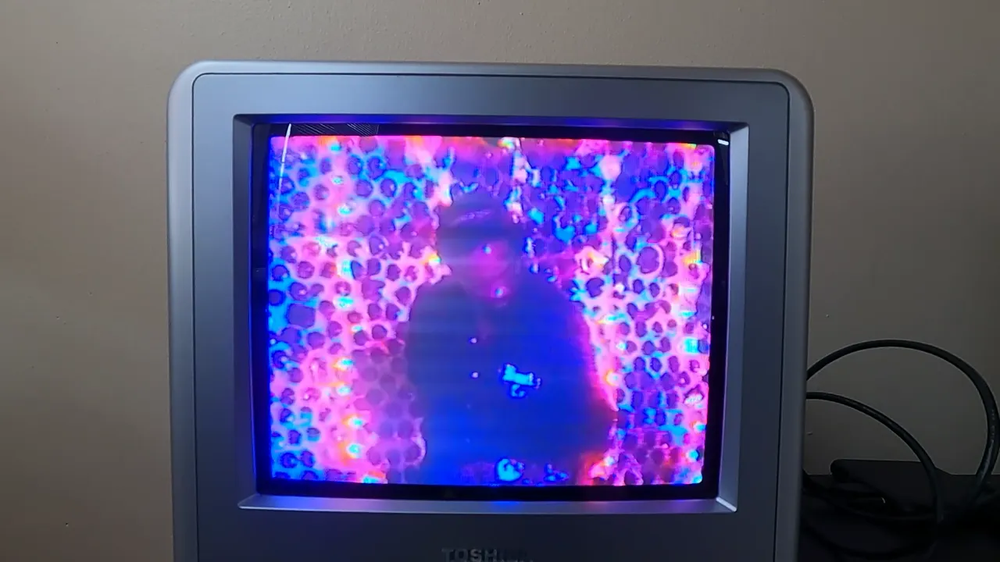

VHS · CRT · circuit bending
Graphic Art
My graphic art started on analog hardware: footage shot and refilmed on a Sony CCD-TRV68 VHS camcorder, plus circuit bending mixed with traditional CRT televisions. It now extends into AI projects and 3D work in Blender, including low-poly game art.
